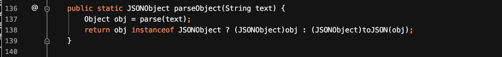
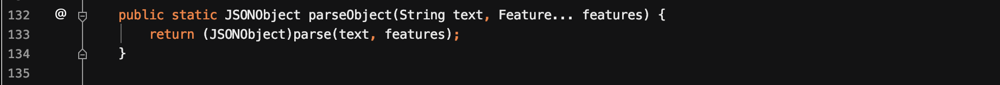
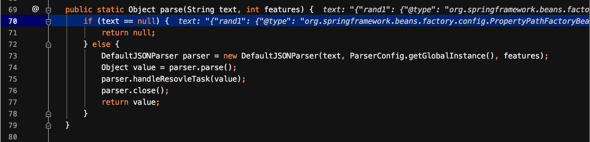
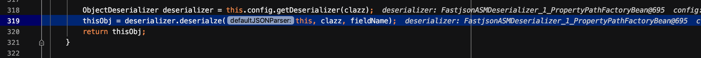
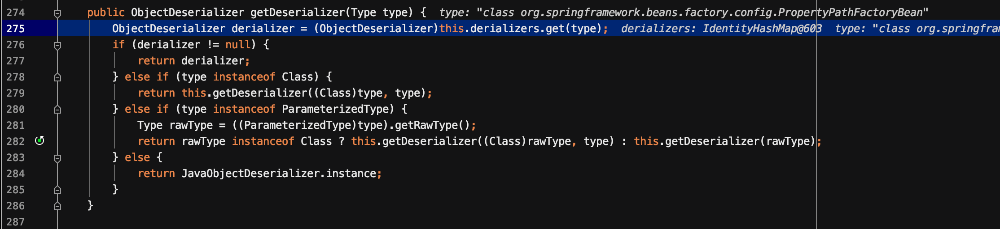
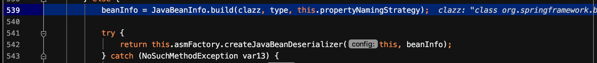
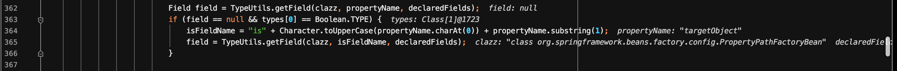
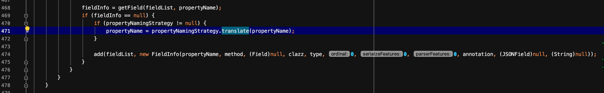

之前虽然看了FastJson相关的内容，在复现的时候还是遇到了不少问题。因为比较详细地分析了下FastJson反序列化的过程，因此，记录了下来。
FastJson简介
FastJson自己实现了一套反序列化的机制，并没有使用默认的readObject()，在序列化反序列化的时候会进行一些操作，调用到一些setter和getter函数，从而造成命令执行。
API介绍
- 序列化
- JSON.toJSONString()
- 反序列化
- JSON.parse() 返回实际类型对象
- JSON.parseObject() 返回JSONObject类型对象
FastJson中提供特殊字段符
@type。该字段可以指定反序列化任意类，并在反序列化过程中自动调用类中属性的公有的set、get、is方法。(这个is方法有待验证)
根据很多的实验可知，反序列化的规律:
- 该类的无参构造函数被调用
- public修饰的属性直接反序列化成功
- private修饰的属性调用setter方法进行赋值
- getter函数会根据函数返回值不同，选择被调用或不被调用
若一定要反序列化私有属性，可以给parseObject方法加入
Feature.SupportNonPublicField。加入之后，它的调用方式与parse()一样，而与parseObject()无关了。后面会分析到这一点。
反序列化的对比
在FastJson的反序列化过程中，最明显的是parse()和parseObject()进行反序列化时，有着很大的不同。
从下图可以看到，JSONObject()调用了parse()方法，只是在最后多了一个toJSON()方法，它在toJSON()方法里面对所有的getter方法进行调用。

除此之外，还有2个属性的影响:
- 有无class类型
- 有无Feature.SupportNonPublicField属性
1.有无class类型
无class类型: parseObject(str)
- 调用类的构造方法
- 所有属性的getter方法
- 所有属性的setter方法
有class类型: parseObject(str,*.class)
- 调用类的构造方法
- 非私有属性的setter方法
- 特定类型的getter方法。
2.有Feature.SupportNonPublicField属性
添加了Feature的parseObject()实际上等同于添加了Feature的parse()方法

- 调用类的构造方法
- 所有属性的setter方法
- 特定类型的getter方法
FastJson反序列化流程
由于parseObject()只是比parse()多了个toJSON()的过程。整个反序列化分析流程就以parseObject()为例。
其中最主要的是DefaultJSONParser类，在该类中会调用很多其他的类来一起完成整个过程。来看看这个类。
DefaultJSONParser
在这个里面有几个比较关键的类:
+ JSONLexer
+ ParserConfig
+ JavaBeanDeserializer
+ JSONScanner
+ ObjectDeserializer首先进入parse()函数，在该函数中调用DefaultJSONParser的parse()函数。

进入DefaultJSONParser.parse()函数，会根据lexer.token的值来选择处理方式。这个lexter是继承自JSONLexerBase的JSONScanner。它对很多特殊符号如{、[等都赋了值。显然由于字符串的第一个字符为{,其token值为12。则进入DefaultJSONParser.parseObject()函数。
在这个中，它会循环处理字符串，摘取类似”name”:”123”这样的key-value对。拖在这个过程中存在symbolTable中的字段，就会进TypeUtils.loadClass()函数。在这个里面若经过了checkAutoType的检查之后。紧接着就会获取对应的deserializer。

简单来说就是根据获取的clazz获取对应的deserilizer。若在预定数组中的类，则可以调用相关类的deserialze方法完成反序列化操作。若没有，则进入asm创建处理类的流程。在获取deserializer之后，会调用其deserilze函数进行反序列化。
JSON字符串的解析
Json字符串的核心处理流程是在DefaultJSONParser#parse中根据json字符串的标志位来进行分发的。
最开始的标志位为{。
1. 判断下一个标志位是否为`"`，若是则提取key值，这时的标志位为第二个`"`。
2. 判断下一个标志位是否为`:`
+ 如果为`:`，则判断下一个标志位是否为`"`，如果是，则获取value值，此时的标志位为`"`
+ 如果为`{`，则重复1～2过程
3. 判断下一个标志位是否为`}`
+ 若为`}`则表示这一单元的解析结束
+ 若为`,`则表示要解析下一个嵌套数据，重复1～3根据不同的标志位进行不同的解析，当解析过程中遇到了@type或$ref时，将当作特殊的标志做相应的处理。
JavaBeanDeserializer
这里进入了JavaBeanDeserializer类进行处理。在该类的构造函数中，将JavaBeanInfo中的信息，包括fieldList等放入了sortedFieldDeserializers中。
其deserialze这部分会遍历整个sortedFieldDeserializers中所有的key，并尝试根据类型来提取json字符串中相应的信息。若成功则转交给asm生成的处理类的createInstance实例化对象，若不成功则扫描json字符串中是否具有特殊指令集。
获取Deserilizer
跟进一下getDeserializer()函数。

首先会尝试在deserializers中匹配type，若有则直接返回。没有则调用getDeserializer继续处理。跟进getDeserializer()。这部分代码很长，当不匹配上面的各种情况时，会调用到createJavaBeanDeserializer来创建一个新的deserializer。跟进createJavaBeanDeserializer()。

然后将生成的deserializer将其加入deserializers这个map。
JavaBeanInfo
在进入build函数后，会遍历一遍传入所有方法，寻找满足set开头的特定类型方法。setter方法的要求:
- 方法名长度大于4且以set开头，且第四个字母需要大写
- 非静态方法
- 返回类型为void或者当前类
- 参数个数为1
获取符合条件的setter方法后，再获取propertyName。
- 若第四个字符是大写的，则将其变为小写，然后获取propertyName值
- 若第四个字符为
_，直接获取_之后的值，然后同第一个一样处理 - 若第四个字符为
f，则直接去掉set即可
然后判断获取到的propertyName是否在类成员变量中。如果不在并且其返回值为Boolean类型，就将其propertyName第一个字母大写，且加上is作为新的propertyName，去查找是否存在此成员变量。

当找到成员变量后，就将其放入fieldList中，放入的是一个FieldInfo对象，包括了(propertyName,method,field,clazz,type)等的信息。
然后再次遍历所有方法，寻找到满足get开头方法。然后getter方法要求如下:
- 函方法名长度大于4且以get开头，且第四个字母需要大写
- 非静态方法
- 函数没有入口参数
- 继承自Collection || Map || AtomicBoolean || AtomicInteger || AtomicLong
将第四个字母转为小写，然后将去掉get的值作为propertyName，然后从fieldList中查找是否存在该propertyName对应的fieldInfo。如果没有，则将该propertyName与此get方法的信息加入fieldList，其中field为null。

遍历完所有的setter和getter方法后，就获取到了一个JavaBeanInfo对象，里面包括了该过程中生成的fieldList。